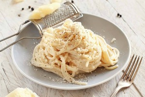

Pasta Cacio e Pepe
Un plat pour 2 personnes

- 400 g de pâtes (spaghetti)
- 4 litres d’eau
- 28 g de sel (attention cela ne rigole pas)
- 160 g de Pecorino Romano râpé
- 1 à 2 cuillères à soupe de poivre du moulin en fonction de vos goûts
Pour prepare ce plat a l'aide des ingredients qu'on vous a presenter auparavant veuillez suivre la liste suivante :
- Bouillir l'eau
- Verser les pates dans l'eau et laisser cuir
- Rajouter le sel
- Mettre le Pecorino dans une poele avec de l'eau de cuisson et laisser mijoter
- Rajouter le poivre du moulin au fromage et melanger
- Sortir les pates de l'eau et les essorer
- Ajouter les pates dans la poele avec le fromage et laisser cuire pendant 2 min
- Servir les pates dans un plat et deguster